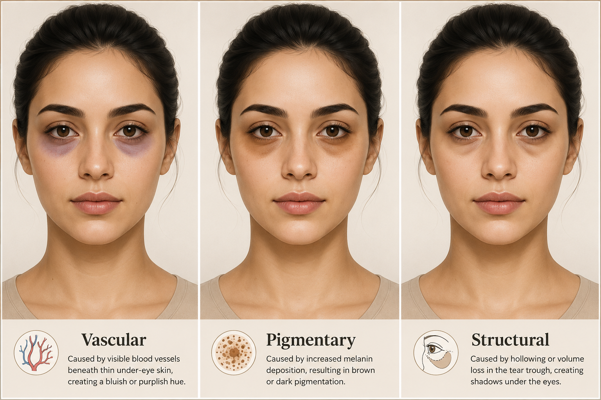

The beauty aisle sells "dark circle correction" like it is one issue. The packaging implies the only question is which product to choose. Beauty insiders know the real question is simpler and more inconvenient: what kind of dark circle are we actually talking about?
There is no single fix because there is no single problem. Vascular circles need different care than pigmentary circles. Structural shadows are not a skincare problem at all. And most eye masks are not solving any of the above, they are just keeping the sale moving.
The Big Problem
Marketing collapses a complex, multi-cause issue into a single purchasable solution. Here is what that looks like side by side.
| What marketing says | What insiders know |
|---|---|
| "This eye mask helps erase dark circles." | Most eye masks only hydrate and temporarily de-puff. |
| "Brightening eye cream works for everyone." | Brightening helps pigment, not shadows caused by structure. |
| "You look tired." | Some dark circles have nothing to do with sleep. |
| "Use this daily and wait." | Waiting does not change tear troughs, eye bags, or inherited lid pigment. |
The 3 Types of Dark Circles
The most useful thing a beauty insider can tell you is that there are three distinct causes, and most products only address one of them at best.

| Type | How it looks | What is causing it | What may help | What will not do much |
|---|---|---|---|---|
| Vascular dark circles | Blue, purple, or gray, worse after poor sleep or screen time | Thin under-eye skin, visible blood vessels, congestion, poor rest | Caffeine eye cream, warm compress, better sleep, allergy control, hydration | Heavy "brightening" creams if the issue is circulation |
| Pigmentary dark circles | Brown or shadowy color on upper and lower lids, like natural eye shadow | Genetics, rubbing, sun exposure, inflammation | Sunscreen, gentle brightening ingredients, less rubbing | Cooling eye masks, caffeine-only formulas |
| Structural dark circles | Darkness sits in a hollow or under an eye bag, changes with lighting | Tear troughs, eye bags, facial anatomy, shadow | Professional assessment, makeup correction, sometimes aesthetic treatment | Eye masks, eye cream, massage tools, miracle serums |
"Most people have never been told which type they have. The industry prefers it that way. A confused customer is a repeat customer."
Insider Translation
You can usually figure out your type without a dermatologist. Watch what your under-eyes actually do.
| If your dark circles do this | It probably means |
|---|---|
| Look worse after late nights | Vascular component |
| Look brown even when you are rested | Pigment component |
| Sit exactly under the hollow | Structural shadow |
| Change dramatically depending on lighting | Structure is involved |
| Come with puffiness | Fluid retention, allergies, or under-eye bags may be involved |
| Run in the family | Genetics are likely doing most of the work |
What Is Actually Worth Buying
Not every eye product is useless. Some are genuinely useful, just not for the reasons the packaging claims, and not for every type of dark circle.
| Product type | Worth it? | Insider comment |
|---|---|---|
| Caffeine eye cream | Yes, for puffiness | Good for a fresher look. Do not expect pigment correction. |
| Brightening eye cream | Sometimes | Better for brown-toned pigment, especially with sunscreen. |
| Sunscreen | Yes | Boring, essential, underused. Pigment gets worse without it. |
| Hydrating eye cream | Yes, for makeup prep | Helps concealer sit better. That is still useful. |
| Retinol eye product | Maybe | Can help texture, but use carefully. The eye area is reactive. |
| Cooling eye masks | Limited | Nice before makeup. Not a dark circle strategy. |
What To Be Suspicious Of
🚩 Red Flags to Watch For
- "Erase dark circles in 7 days" — Dark circles are too complex for that claim.
- Before and after photos in different lighting — Lighting can fake under-eye improvement very easily.
- One product claiming to fix all dark circles — Vascular, pigment, and structural circles need different approaches.
- "Doctor-inspired" with no real explanation — A medical-looking jar is still just a jar.
- Heavy fragrance near the eyes — Irritation can make discoloration worse.
The Beauty Insider Take
Dark circles are not one simple skincare problem. Some come from blood flow. Some come from pigment. Some are shadows from anatomy. Some are inherited. Most are a mix.
The scam is not that every eye product is useless. The scam is selling every under-eye concern as if it can be solved with one cooling patch and a cute pastel box.
Your under-eyes do not need more panic shopping. They need the right diagnosis.